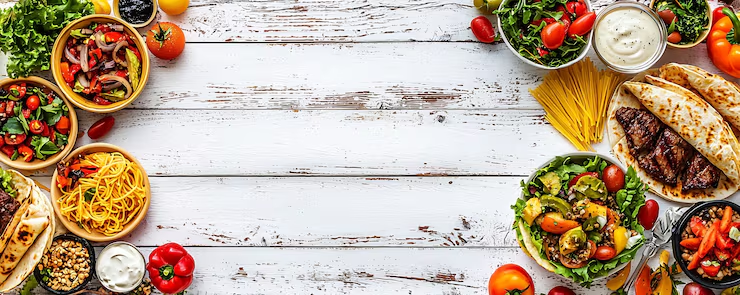

Design Screens


Designing a seamless experience for healthy food subscription and ordering
This project is a food and nutrition platform designed to help users order healthy meals based on their dietary preferences. The platform includes meal browsing, subscription plans, and personalized meal selection.
*Some details have been modified to maintain client confidentiality.
I worked on UI/UX design and frontend development, focusing on building an intuitive interface for meal browsing, pricing plans, and user flow.
Users struggle to find healthy food options that match their dietary needs. Existing platforms are cluttered, lack personalization, and make it hard to compare meal plans effectively.
Designed a clean, modern interface with strong visual hierarchy, allowing users to quickly explore meals, filter options, and choose subscription plans without confusion.
Improved decision making
Simplified user flow
Better visual experience
Food products rely heavily on visuals
Less friction = better conversion
Clear navigation improves usability